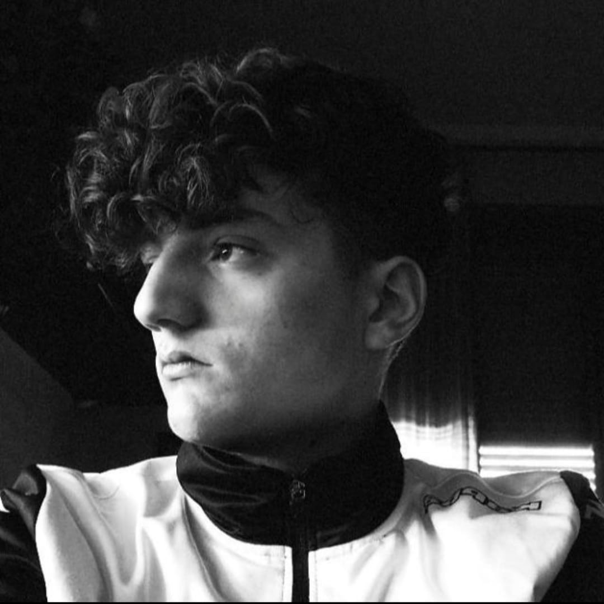

Come ho gia' detto in precedenza mi chiamo Francesco Pieretto, vivo a Barge in provincia di Cuneo, ho 17 anni e sono uno studente dell'istituto di istruzione superiore Vallauri di Fossano.
Sono un ragazzo che ama lo sport e che non riesce mai a stare fermo. Infatti se ho un po' di tempo libero, trovo sicuramente qualcosa da fare come giocare ai videogiochi con i miei amici oppure uscire per il paese con loro.
Parlando dei miei amici sono molto fortunato perche' siamo un bel gruppetto e in qualche modo ci divertiamo sempre.
Inoltre devo dire che ho moltissimi hobby oppure passatempi che faccio durante le giornate, infatti sono molto appassionato di calcio e per questo gioco nella squadra del mio paese e oltre al calcio seguo molto il basket e la formula1.
Tornando a parlare della scuola che frequento, mi sto trovando molto bene perche' l'informatica ovvero la materia principale del mio corso, mi sta piacendo e incuriosendo molto.